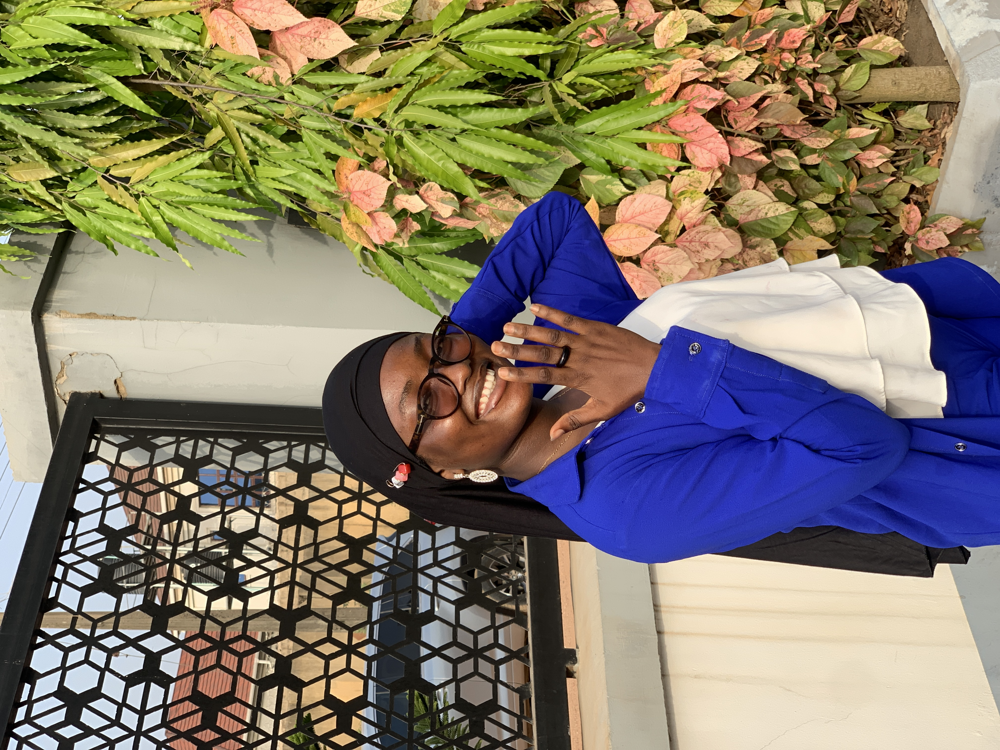

I am AKINLAWON ROQEEBAT born on 25 August at Abeokuta, in western
Nigeria.
After preparatory and basic primary education in 2009, I continued at
Abeokuta Grammar School, where later in 2019 I took my Secondary School
Leaving Certificate (SSCE).
During the six years spent in the school, I used to be a known member of the
Literary and Debating society where I represented my school at
various speech, oratory contest including the famous “Wole Soyinka Essay
Competition” and Park INN by Radisson schools debate. I was however
presented with an award of recognition due to my remarkable and
outstanding performance at the Presidential Schools Debate (2015).
-
I am currently enrolled as a second year student at the Ogun State
College of Nursing Sciences where I specializes in Midwifery. Like many
adult students, I am required to arrange and meet specific criteria
so as to qualify and pursue my chosen healthcare career.
-
As an ambitious young girl that is always eager to lean a new skill,
before my admission into the Nursing school in 2022, I got herself
into a fashion school where she learnt the basics of styling and
fashion designing. Even while at school, I take my leisure time to
design clothes for my colleagues where I earns a little amount of
money to support my education.
-
My unending thirst for knowledge and the evolution of the world into
technology drove my urge to enroll at altschool Africa.
Reasons I Join Altschool
- My major goal is to apply the knowledge of Software Engineering into
Nursing making me more versatile in the healthcare field.
-
To enhance my skill and diversify my career options
-
Having a tech skill will be beneficial for me to understand and work with
healthcare software and systems effectively.
Goals for engineering programme
- Mastering programming language to build interactiveand visually appealing
applications.
- Understanding design principles and best practices to create user-friendly interfaces.
-
Collaborate with designers to create seamless web experiences is important.